Deep Automation in Surgical Robotics
Surgery started as manual craft, became teleoperated through robotic systems, and is now moving toward computer-assisted autonomy for narrow, well-defined tasks.
Surgery is becoming a software problem...

The state of surgical robotics today.
The bottleneck has moved from mechanics to software, data, and verification. Ten commercial platforms now compete. Cost per procedure is falling. Machine learning is reliable enough for narrow safety-critical tasks. The hard part now is proving these systems work safely across real surgical variation.
We will build the picture piece by piece.
First we look at the robots and tasks that exist today, then the software stack and learning methods, then one concrete case study and the path toward clinical use.
Types of surgical robots used today.
The hardware in operating rooms today — the teleoperated giants, the specialty robots, and the open research kits that academia actually publishes on.
Robots fully controlled by the surgeon.
These are master-slave teleoperation systems used for minimally invasive procedures such as urology, gynecology, colorectal surgery, thoracic surgery, and general laparoscopy. The robot does not decide or act independently: the surgeon controls every instrument motion from the console. The system provides wristed instruments through small ports, stereo vision, tremor filtering, and motion scaling.

Intuitive da Vinci
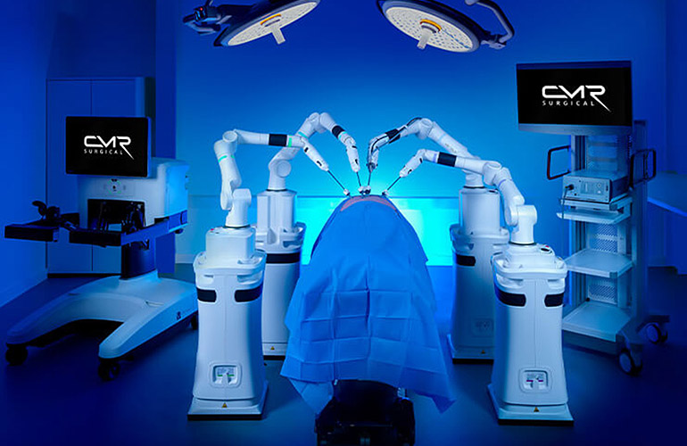
CMR Versius

Medtronic Hugo RAS
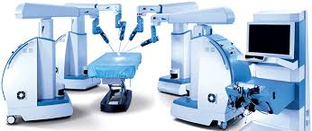
Asensus Senhance
Built for one procedure
The teleoperated giants are general but dumb. The next class is the opposite — each robot solves one domain so well that it can do part of the procedure on its own. The trick: when the geometry is rigid and the plan comes from a CT scan, the robot can be trusted with motions a teleoperated arm cannot.
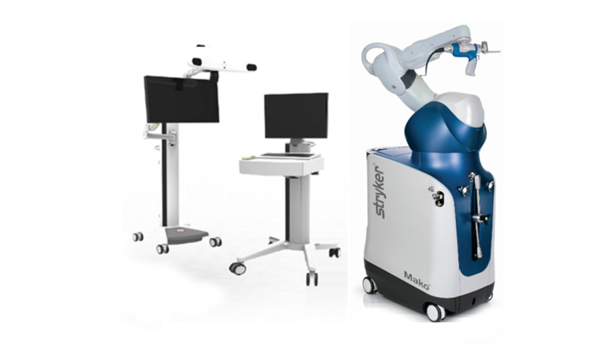
Stryker Mako
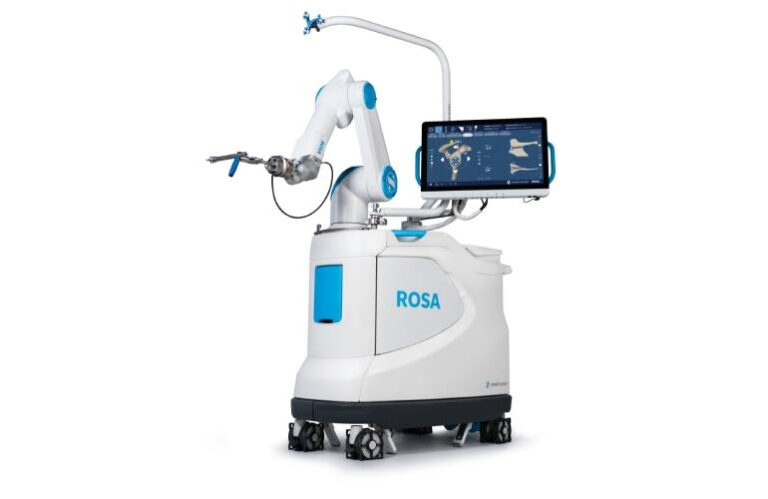
Zimmer ROSA / S+N CORI
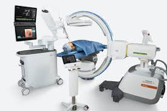
Intuitive Ion / Auris Monarch
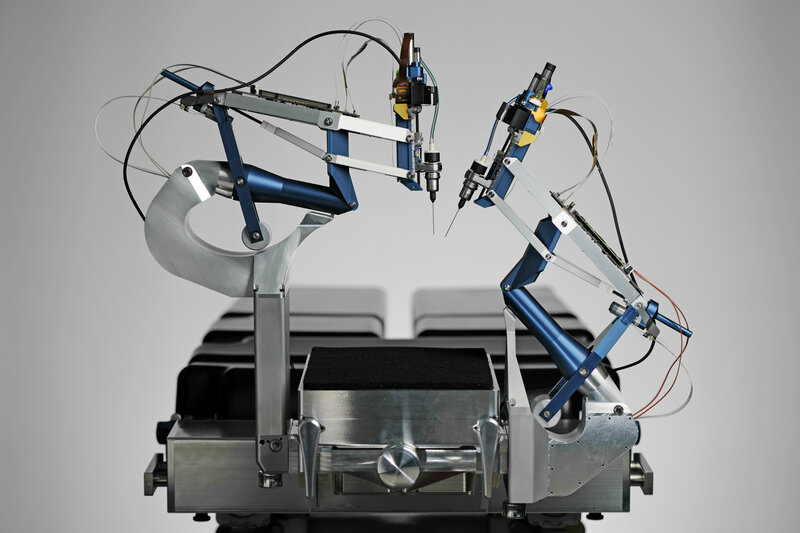
Preceyes / ForSight
| Robot | Specialized procedure |
|---|---|
| Stryker Mako | Knee and hip replacement bone preparation |
| ROSA / CORI | Spine navigation, knee planning, handheld bone milling |
| Ion / Monarch | Robotic bronchoscopy to reach lung nodules |
| Preceyes / ForSight | Retinal microsurgery and eye procedures |
Platforms built for surgical research.
Commercial robots are closed products. Research needs platforms where labs can command joints, read sensors, change controllers, and connect learning code to real hardware.
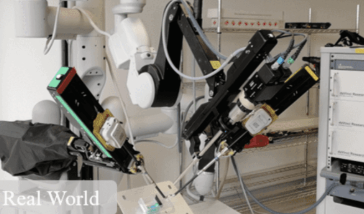
da Vinci Research Kit (dVRK)
Hardware: retired first-generation da Vinci arms, PSM patient-side manipulators, ECM camera arm, optional master console.
Software: Johns Hopkins open stack with cisst/SAW, CRTK API, ROS bridge, Python/C++ control. It is the reference platform for surgical imitation learning and RL because policies can command the robot directly.
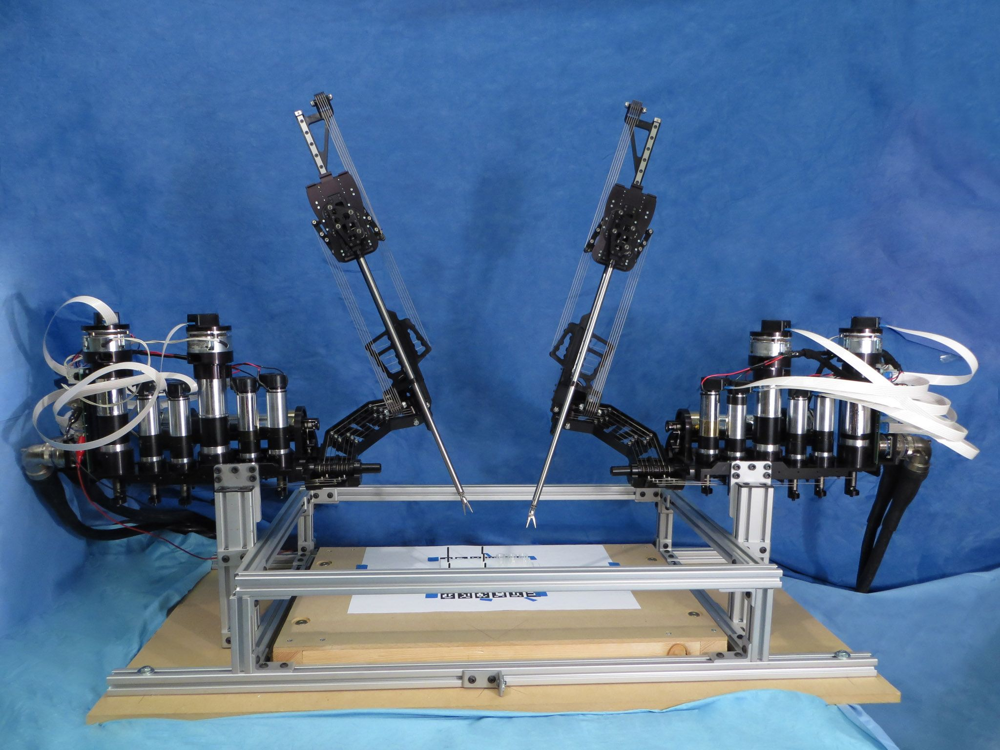
RAVEN II
Hardware: open, cable-driven 7-DoF surgical arms designed for research and teleoperation experiments.
Software: open ROS-based control stack for joint-space and Cartesian commands. It is useful when researchers need to modify the robot itself, inject latency, test networked tele-surgery, or study control under communication limits.
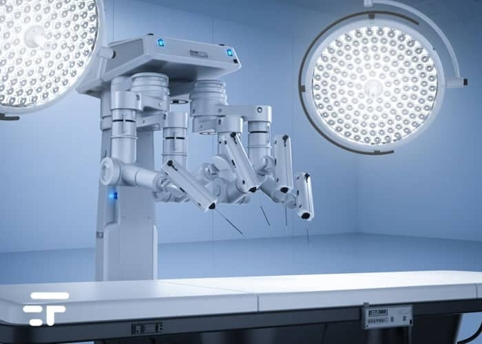
STAR
Hardware: custom soft-tissue suturing system with near-infrared marker tracking and force-aware tooling.
Software: perception, motion planning, closed-loop replanning, and safety supervision for autonomous bowel anastomosis. It matters because it demonstrated task autonomy on deformable tissue, not just rigid bone or camera movement.
From manual control to full autonomy.
Real commercial systems are mostly at level 0–1 for laparoscopy, and at level 2 for narrow specialties like orthopedics. Levels 4 and 5 are far in the future — and may never be the goal for most surgical tasks.
Surgery as an algorithm.
Each procedure is a different step sequence. Some steps are already commercially assisted or semi-automated in narrow use-cases, some are active research with promising prototypes, and some are still not automated at all — which is where the next wave of research and innovation sits.
Autonomous camera control is low risk and high impact.
If the camera points to the wrong area, the surgeon can correct it immediately: the typical failure is poor visibility, not direct tissue harm. That makes this function much easier to validate and certify than cutting or suturing.
Step 1: collect frames and mark the tool tips.
Start with surgical video. Pick frames where the tool is visible, then label the tip position. These labeled frames train the detector used by the camera controller.

Step 2: a lightweight CNN predicts tip location in real time.
The CNN is trained on labeled frames, then run online on each incoming video frame. In practice, camera-control systems usually use a compact detector or keypoint network, not a huge foundation model.
Example architecture · ResNet-18
Step 3: move the camera to keep the tool in view.
The controller compares the detected tool tip with the center of the image. If the tip is off-center, the endoscope moves a little in that direction. Every move is slowed, limited, and checked before it is sent to the robot.
Camera-control loop
Autonomous stitching.
A stitch is not one magic motion. The robot repeats a small sequence: know where the wound is, plan the needle arc, push through tissue, pull the thread, then hand the needle to the other arm.
Suturing as a state machine plus optimizer.
The robot does not discover the wound by itself. The wound shape and position are given to the system and registered to the camera/robot frame. Then it plans several throws and executes them with visual feedback.
Autonomous multi-throw loop
Step 1: know where the needle is.
The robot cannot push or hand off the needle safely unless it knows the needle pose. The paper uses a model-based tracker, not a deep network.
Technique
Paint the needle, HSV-filter pixels, fit a curved-needle model.
Why not just vision?
Glare and occlusion break raw vision. Shape + filter keep the pose stable.
Tracking pipeline
Step 2: push a curved needle through tissue without tearing it.
Given entry and exit points, the planner searches for a needle arc that follows the needle's natural curve as much as possible while avoiding unsafe poses.
Technique
Sequential convex optimization solves the path in small approximations — try a curve, check constraints, adjust, repeat until feasible.
Execution
The dVRK gets a sequence of Cartesian tool poses that rotate and advance the needle through the planned arc.
Planner intuition
Step 3: switch arms without losing the needle.
After insertion, the opposite arm must grasp the exposed needle, pull the suture through, and hand the needle back in the right orientation for the next throw.
Technique
The system tracks both needle ends. The receiving arm moves to the exposed end, closes the gripper, then pulls along a planned direction to draw the thread through.
Why the needle guide matters
The jaw-mounted guide acts like a mechanical funnel: even on a slightly imperfect grasp, closing the gripper settles the needle into a known orientation.
Arm-to-arm sequence
Latency vs Accuracy tradeoff.
Surgical robots are real-time systems, so decisions must arrive quickly. But surgery is high-risk, so those decisions must also be accurate enough for the task. We cannot pick the most advanced model if inference is too slow, and we cannot pick the fastest shortcut if its error is above the task's safety threshold.
Simulation frameworks for surgical robotics.
Two popular choices: SurRoL for lightweight, reproducible surgical-RL tasks, and ORBIT-Surgical for GPU-scale simulation and modern robot-learning pipelines. For the case study, we zoom into SurRoL.
SurRoL
PyBullet, dVRK-compatible robots, Gym-style tasks. Best for explaining surgical RL concepts, building fast prototypes, and reproducing small task environments.
ORBIT-Surgical
Isaac Lab / PhysX style GPU-parallel simulation. Useful when the goal is high-throughput training, many environments, and scalable robot-learning experiments.
PSM fundamental actions.
These tasks isolate the Patient Side Manipulator tool arm: move the jaw tip, open or close the gripper, pick a small object, or hand it to the other arm.
Needle Reach
Gauze Retrieve
Needle Pick
Needle Regrasp
ECM control actions.
These tasks isolate the Endoscopic Camera Manipulator: move the camera, correct orientation, or keep a target in view.
ECM Reach
Misorient
Static Track
Active Track
Basic surgical skills.
These tasks combine reach, grasp, hand-off, collision avoidance, and sequencing into longer manipulation problems.
Peg Transfer
Bimanual Peg Transfer
Needle the Rings
Pick and Place
Peg Board
Match Board
SurRoL exposes surgical tasks through a Gym API.
The core is the PyBullet world, dVRK robot wrappers, and task environments. GUI, demonstration collection, and RL training are clients that call the same reset/step/render interface.
Core stack and clients
Define the surgical subtask as a small environment contract.
Before choosing an algorithm, decide what the agent sees, what it can do, what counts as good, and when the episode ends.
Task class skeleton
from surrol.tasks.psm_env import PsmEnv
class MySurgicalTask(PsmEnv):
ACTION_SIZE = 4 # dx, dy, dz, gripper
def _env_setup(self):
super()._env_setup()
# load objects, randomize scene, reset robot
def _get_obs(self):
# return observation / achieved_goal / desired_goal
return obs
def _set_action(self, action):
# map normalized action to robot motion
self.psm1.move(target_pose)
def compute_reward(self, achieved, desired, info):
return reward
def _is_success(self, achieved, desired):
return successObservation
Robot pose, tool state, object pose, image features, or any compact state you trust.
Action
Usually normalized values in [-1, 1], then mapped to small Cartesian motions or jaw commands.
Reward / success
Reward progress, penalize risk, and define strict success and failure conditions.
Build the simulated scene and attach the dVRK-style robot.
SurRoL tasks inherit from robot environments like PsmEnv. The base class creates the PSM robot; the task adds objects, goals, randomization, and constraints.
Scene setup pattern
def _env_setup(self):
super()._env_setup() # creates PSM, table, goal marker
self.has_object = True
self.block_gripper = False
obj_id = p.loadURDF(
os.path.join(ASSET_DIR_PATH, "my_object.urdf"),
random_pose,
random_orientation,
globalScaling=self.SCALING,
)
self.obj_ids["rigid"].append(obj_id)
# randomize the world each episode
p.changeDynamics(obj_id, -1, lateralFriction=random_friction)Robot
PsmEnv creates a dVRK PSM wrapper. Actions eventually call robot methods such as move() and move_jaw().
Objects
Tools, vessels, needles, pegs, and boards are URDF/mesh assets loaded into PyBullet.
Randomization
Change object pose, friction, damping, size, color, or observation noise so the policy does not overfit one world.
Register it, then run the standard Gym loop.
Once the task is registered, every RL library can treat it like a normal Gym environment.
Registration + rollout
# surrol/gym/__init__.py
register(
id="MyTask-v0",
entry_point="surrol.tasks.my_task:MySurgicalTask",
kwargs={"render_mode": None, "cid": -1},
max_episode_steps=300,
)
# train/debug script
import gym, surrol.gym
env = gym.make("MyTask-v0")
obs = env.reset()
for t in range(300):
action = policy(obs)
obs, reward, done, info = env.step(action)
if done:
breakWhat SurRoL handles
PyBullet connection, reset, stepping, rendering, action clipping, observations, rewards, and success info.
What you still define
The task logic: scene objects, observation vector, action mapping, reward shaping, and done conditions.
Choose a policy algorithm, train, then evaluate deterministically.
The algorithm is swappable. PPO is a common starting point for continuous control; imitation or offline RL can use the same environment contract.
Training script skeleton
from stable_baselines3 import PPO
from stable_baselines3.common.vec_env import DummyVecEnv, VecNormalize
ENV_ID = "MyTask-v0"
def make_env():
return gym.make(ENV_ID)
train_env = DummyVecEnv([make_env])
train_env = VecNormalize(train_env, norm_obs=True, norm_reward=True)
model = PPO(
policy="MultiInputPolicy",
env=train_env,
learning_rate=3e-4,
n_steps=1024,
batch_size=256,
)
model.learn(total_timesteps=400_000)
model.save("best_policy")Policy choice
PPO/SAC for online RL, behavior cloning for demonstrations, diffusion/transformer policies for richer action sequences.
Evaluation
Run deterministic episodes, log success rate, reward, episode length, error, unsafe events, and action smoothness.
Artifacts
Save checkpoints, best model, normalization stats, eval logs, videos, and CSV diagnostics.
What does a surgical robotic system look like?
This is the basic layout: the surgeon works at a console, a local computer processes vision and safety checks, and the robot arms move the tools at the patient.
The software stack.
Lower layers expose the robot and simulator. Middle layers turn sensor data into state and train policies. The top layer runs the trained model fast enough for use in the operating room.
The model must answer before the robot needs to move.
Every cycle has a small time budget: read sensors, run perception/policy, check safety, then send the command. If any step is late, the robot should stop or hand control back.
One control cycle
Latency budget
For a 60 FPS camera, one frame is ~16 ms. The whole loop should finish inside that window; lower-level motor control can be even faster.
Inference constraint
Perception + policy must be local, bounded, and predictable. Heavy models need TensorRT/ONNX/Holoscan or must run outside the tight loop.
Missed deadline
If the answer is late, do not guess. Hold last safe command, stop, alert the surgeon, or return manual control.
The techniques used to automate surgical tasks.
We move from classical control and motion planning to imitation learning, reinforcement learning, deep RL, and newer diffusion / transformer policies. Modern systems usually combine several of these techniques in one pipeline.
Modern surgical autonomy combines decades of methods.
Modern systems use 4 or 5 of these in one pipeline. None of the older tools went away — you just stack them.
Still the workhorse. Under every learned policy.
Underneath every learned policy is a stack of decades‑old controllers that nobody plans to replace.
Closed-loop control
PID + impedance
Joint‑level setpoint tracking, plus a programmable spring at the tool tip. Why surgical robots feel compliant instead of stiff.
Visual servoing
Image error → joint velocity. Powers every autonomous camera holder shipping today.
Constraint enforcement
Virtual fixtures. "You may move here, not there." How Mako keeps the saw inside the planned bone region.
Why it matters for ML
Learned policies output references. Classical control tracks them and clamps them. The safety case lives here, not in the network.
Learn from surgeons
Classical control gets you precise but rigid behavior. The next step is to learn what "good surgery" looks like from somebody who already knows how to do it.
Learning from demonstrations
Behavior cloning
Record (observation, action) pairs from a teacher and train a network to mimic them. Simple, but brittle: as soon as the policy drifts even slightly off the demonstrations, errors compound — the network has never seen those states.
ACT & Diffusion Policy
Predict chunks of future actions instead of single steps, using a transformer or a diffusion model. The chunked output is robust to noise and — since 2023 — the strongest non‑RL approach on most surgical benchmarks.
Datasets matter most
In imitation learning the model is the easy part. The data collection is the entire problem.
Imitation needs an expert. What if you don't have one?
Then you let the agent discover the policy itself, by trial and error against a simulator and a reward.
Trial-and-error loop
Agent picks actions, observes states, receives rewards.
Model‑free (PPO, SAC, DQN) — learn from trial & error.
Model‑based (Dreamer, MuZero) — learn a world model, plan inside it.
Domain randomization. Train across worlds.
You cannot iterate RL directly on real tissue, but policies trained in one simulator rarely transfer cleanly to real robots. Domain randomization changes physics, lighting, geometry, and sensor noise every episode so the policy learns behavior that survives many worlds, including the real one.
Bridge from sim to real
The new wave. Stop training from scratch.
Pre‑train one giant model on every endoscopic video and kinematic trace ever recorded, then fine‑tune it for whatever you actually need. Same playbook that took NLP from 2017 to ChatGPT.
Pre-train, then adapt
RT‑2 / OpenVLA
Vision‑language‑action models pre‑trained on millions of robot trajectories from many embodiments. Give them an image and a sentence — "pick up the green clip" — they output joint commands. The first credible attempt at a generalist robot brain.
SurgicalSAM, EndoFM
Domain‑specific foundation models for instrument and tissue segmentation in endoscopic video. Fine‑tuned from generic vision foundations (SAM, DINO) on tens of thousands of annotated surgical frames.
CholecT45 / EndoVis
Public datasets that fuel the pre‑training era — tens of thousands of annotated cholecystectomy and laparoscopy videos. Still many orders of magnitude smaller than ImageNet, which is the field's structural problem.
Case Study: Vascular Clip Application
Everything we've talked about — PPO, SurRoL, reward shaping, runtime monitors — applied to one job: vascular clip application.
Squeeze sub-task.
Vascular clip application can be broken into six sub-tasks. In this case study, I automate one of them: the pre-firing squeeze, where the tool must compress the vessel safely before the clip is fired.
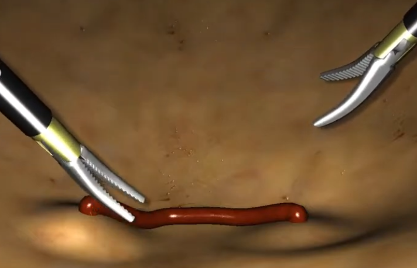
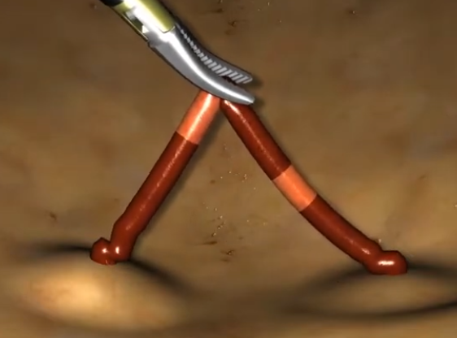
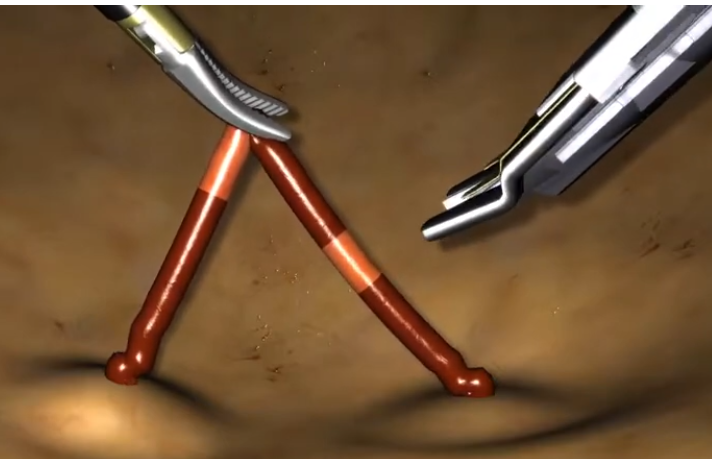
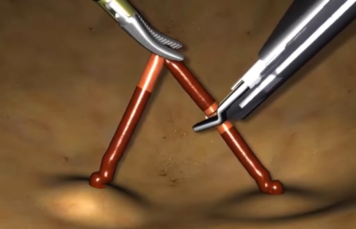
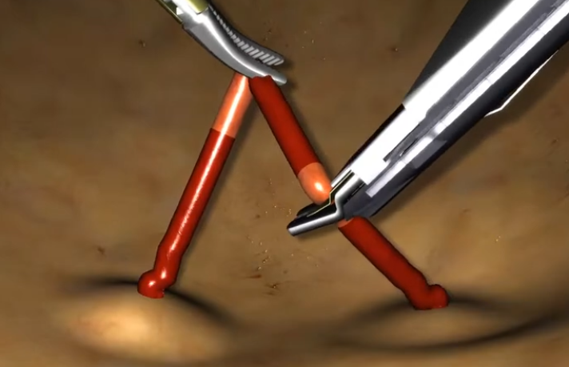
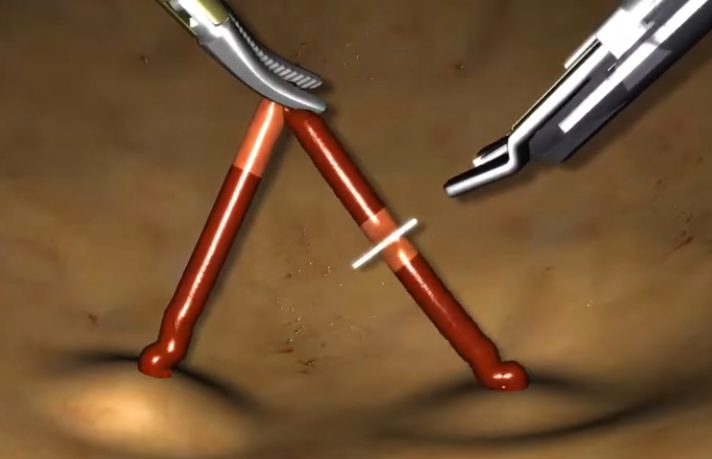
First, translate the surgical task into an RL problem.
Training only works after the basic interface is clear: what the agent observes, what action it controls, and which simulator it learns in.
RL framing loop
State (4‑D)
Jaw angle, last action, vessel radius, wall thickness.
Action (1‑D continuous)
A single continuous knob that sets the commanded jaw angle.
Setup
- Algorithm. PPO, model‑free policy gradient.
- Simulator. SurRoL / PyBullet.
- Training. ~400k steps on a laptop GPU.
DRL with PPO: a neural policy improved by small trusted updates.
Deep reinforcement learning means the control rule is a neural network. PPO trains it by trying actions in simulation, measuring reward, and changing the network only a little at a time.
What PPO updates
Why PPO
PPO compares the new policy to the old one and clips the update if the change is too large. Intuitively: improve the squeeze behavior, but avoid one bad batch causing a big jump.
Actor + critic
The actor chooses the jaw command. The critic estimates whether the current state is promising, helping the actor learn which actions deserve more probability next time.
Reward design is where the safety logic enters the RL problem.
The policy should not simply close the jaws as much as possible. It must reach a target occlusion, avoid the damage region, and hold steady.
Occlusion model
Reward terms
Reward accuracy, smooth motion, and staying away from damage.
Reward hacking fix
The problem: if we only reward low flow, the policy can learn the wrong shortcut — clamp too hard, hover at the edge of damage, or oscillate around the target.
- Damage guard. End the episode with a penalty if the jaw crosses the damage angle.
- Safety margin. Penalize getting close to damage, not only crossing it.
- Stable hold. Penalize jerky Δu and count success only after consecutive steady steps.
We did not train on one perfect vessel.
Each episode changes the simulated vessel and contact conditions, so the policy learns a rule that works across a family of cases instead of memorizing one geometry.
What changes at reset
| Randomized parameter | Typical range (clip‑application example) |
|---|---|
| Vessel radius | 1.5 – 3.0 mm |
| Friction coefficient | 0.3 – 1.2 |
| Damping | 0.02 – 0.10 |
| Sensing noise | σ ≈ 0.002 rad |
| Pose tilt | ± 1.1° |
Early training explores. Later training refines the squeeze.
The policy is trained for 400k environment steps. Episodes are capped at 300 steps, so the run covers at least about 1.3k randomized episodes, and usually more because success or damage can end an episode early.
Training budget split
How exploration is encouraged
- Entropy bonus. Early on, PPO is nudged to try different jaw commands instead of collapsing to one behavior.
- Randomized episodes. Exploration is not just random action noise; the agent also sees different vessel cases.
- Rollout updates. PPO collects 1024 steps, then updates using a clipped objective so policy changes stay controlled.
When we prefer exploitation
- After 100k steps. Entropy has faded, so learning focuses on the best discovered squeeze behavior.
- Near the target band. The policy should reduce action changes and hold steady, not keep experimenting.
- During evaluation. Eval runs are deterministic every 20k steps; checkpoints save progress every 10k.
The policy learned a two-phase squeeze strategy.
Use the live policy demo to vary vessel radius and wall thickness. The first moves close the gap quickly; later moves settle into a stable hold.
Simulation result: the learned policy executes the squeeze.
This is the trained policy running in the simulated vessel-squeeze setup: close quickly, avoid over-compression, then hold the target region.
What still blocks surgical autonomy, what comes next, and how we prove it is safe enough.
We just trained one policy for one sub‑task in simulation. The honest next question is: what would it take to get a policy like this to a real patient?
Scale the problem either direction and you hit the same five walls.
None of these are research curiosities — each one is a project plan for the next decade.
Sim-to-real gap
Soft tissue deforms, organs slip, blood and smoke obscure vision. Domain randomization helps, but simulation still misses real OR physics.
Force sensing
Most systems do not measure true tool-tip force. Without force, safe squeezing, pulling, and suturing remain hard to automate.
Patient variation
Organ size, position, fat thickness, and prior surgery change the scene. A policy must work across anatomy, not one clean case.
Verification & regulation
A learned controller is not certified just because it works in a demo. It needs traceable requirements, test evidence, runtime monitors, and a validation path regulators can inspect.
Data scarcity
JIGSAWS has 103 demonstrations; ImageNet had 14M images. Surgical data is also private, sensitive, and hard to share across hospitals.
Near-term autonomy will look less like a robot surgeon and more like an assistant that understands the operation.
It follows the procedure in real time, helps with routine subtasks, and uses the same kind of pre‑trained models we use elsewhere in AI today.
Surgical copilots
Models that watch the procedure live, name the anatomy in real time, suggest the next step, and offer to take over routine actions. Think Copilot for code — except the editor is an OR.
Generalist foundation models
Pre‑trained on every endoscopic video and kinematic trace ever recorded, then fine‑tuned per task. The same playbook that took NLP from 2017 to ChatGPT — just with five fewer orders of magnitude of data, for now.
Multi‑modal sensing
Force, vision, intra‑op ultrasound, and ICG fluorescence fused into one perception stack. Each modality answers a question the others can't — force tells you what tissue is doing, fluorescence tells you where the blood goes.
Last‑foot autonomy
The realistic near‑term: the surgeon does the surgery, the robot does the boring 80%. Suction, retraction, camera holding, irrigation, simple closure — all good targets that don't require solving surgery.
A simulation result is only the start. Clinical use requires step-by-step validation.
Every rung filters out things you didn't think you'd missed. Skipping rungs is how patients get hurt.
Thank you.
Questions?
If a single message survives the next hour, let it be this: surgical autonomy is narrow, deep, and built from the same tools you already use — wrapped in a safety envelope you build yourself.